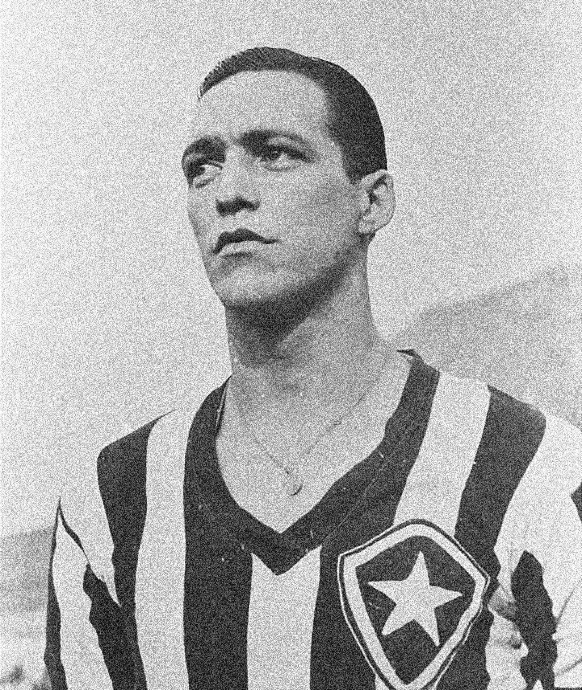

A história do clube começa com a palavra "Botafogo", que era o apelido do galeão da marinha portuguesa chamado de São João Batista. Passou a ser conhecido como Botafogo por conta do seu imenso poder de ataque, com 366 bocas de fogo e canhões de bronze. Lançado ao mar no século XVI, o navio era um dos mais poderosos de sua época, e certamente o mais temido.
Ficou famoso por seu papel na conquista de Tunes, onde ajudou a romper as defesas do porto, quando Carlos V solicitou apoio naval aos portugueses e requisitou especificamente o “Botafogo”.
Um dos membros da tripulação, o nobre João Pereira de Sousa, artilheiro do navio, acabou herdando o apelido de Botafogo. Ele depois se estabeleceria no Brasil e viria a lutar contra franceses e índios Tupiniquins, recebendo como recompensa da coroa portuguesa terras na Baía de Guanabara, que, por isso, passaram a ser conhecidas como terras do Botafogo.
Assim, surgiu o bairro de Botafogo, que mais tarde daria nome ao Clube de Regatas Botafogo e ao Botafogo Football Club.
Clube de Regatas Botafogo
Fundado em 1° de julho de 1894, foi o primeiro clube carioca campeão brasileiro de remo. Seu foco eram os esportes aquáticos. Sua sede ficava na praia de Botafogo, e o clube se destacou com o barco Diva, que se tornou uma lenda nas águas da Baía de Guanabara ao vencer todas as 22 regatas que disputou, sagrando o clube campeão carioca de 1899.
Botafogo Football Club
No ano de 1904, surgia no bairro de Botafogo um novo clube de futebol, o Electro Club. A associação surgiu a partir da ideia de Flávio Ramos e Emmanuel Sodré, que estudavam juntos no colégio Alfredo Gomes. A ideia foi discutida durante a aula, por meio de bilhetes trocados em sala, que acabaram sendo interceptados pelo professor.
Na tarde do dia 12 de agosto, Flávio, Emmanuel e outros colegas, que tinham idade entre 14 e 15 anos, fundaram então o tal Electro Club, no chalé de um velho casarão em ruínas da rua Conselheiro Gonzaga, gentilmente cedido aos garotos por Dona Chiquitota, avó materna de Flávio. Foi ela, inclusive, quem sugeriu que mudassem o nome do clube para Botafogo, por conta do bairro. Eles acataram, e surgia então o Botafogo Football Club.
O Glorioso
Em 1907 conquistou seu 1o camp carioca. Em 1909 aplicou a maior goleada da historia do futebol brasileiro, um 24 a 0 sobre o Mangueira. Em 1910 conquistou novamente o Carioca, dessa vez de forma avassaladora, marcando 66 gols em 10 jogos. A campanha histórica conferiu ao clube o apelido de O Glorioso.
Após essa conquista, o clube iria em busca do bi em 1911, mas uma briga genralziada em uma partida contra o América mudaria o destino do clube. Um zagueiro adversário deu uma entrada violenta em Flávio Ramos (jogador e fundador do Botafogo), provocando uma pancadaria entre atletas e até torecedores.
A Liga Metropolitana de Esportes Atléticos decide então punir dois jogadores do Botafogo (suspensões de 6 a 12 meses aproximadamente) e nenhum do América. Em protesto, o Botafogo abandona a liga e fica sem disputar o Carioca. Para se ocupar, passa a viajar e disputar amistosos apenas. No entanto, não jogar o Carioca afetou de forma grave as receitas do clube, de tal forma que o clube precisou vender sua primeira sede, que ficava na rua Voluntários da Pátria, no Largo dos Leões.
Tetracampeonato
Nas décidas de 1910 e 1920 o clube viveu uma entressafra, e só voltaria a conquistar o Campeonato Carioca na década de 30. No entanto, seu retorno ao topo foi triunfal, pois conquistaria o até hoje indédito tetracampeonato carioca, com 4 títulos seguidos, em 32, 33,34 e 35. Nessa última conquista, o destaque do time foi Leônidas da Silva.
Década de 40
Na década 40 houve a fusão entre o Club de Regatas Botafogo e o Botafogo Football Club, que ocorreu no ano de 1942, após uma partida de basquete disputada entre os dois. Nesse dia o jogador Albano, um dos principais jogadores do Botafogo Football Club e da Seleção Brasileira, saiu atrasado do trabalho e chegou à quadra com o jogo já em andamento. Durante o intervalo, Armando se abaixou para pegar uma bola e caiu desfalecido na quadra. Prontamente o jogador foi levado ao vestiário e a partida recomeçou. Porém, após alguns minutos a notícia de sua morte interrompeu o confronto.
Envolvidos em uma profunda atmosfera de comoção, os dirigentes das duas agremiações optaram pela união dos clubes. Nascia assim o Botafogo de Futebol e Regatas.
 A década de 40 foi curiosa para o clube, pois foi rica em vários sentidos, mas vazia de títulos. O clube contou com Heleno de Freitas, o maior ídolo do clube na era pré-Garrincha, mas só voltaria a ser campeão após a sua saída, em 1948, quando se sagrou campeão carioca. Heleno fora vendido para o Boca Juniors, para que o Botafogo resolvesse suas questões financeiras, já que mais uma vez o clube se via cercado de dívidas.
Foi também em 1948 que o cachorro Biriba, que pertencia ao zagueiro reserva Macaé, invadiu o campo durante um jogo de aspirantes, e acabou sendo adotado pelo presidente do clube Carlito Rocha, para se tornar um grande símbolo do clube. Urinava nos jogadores, pois era ritual de superstição do presidente, e viajava com a delegação. Durante jogos em que o time estava perdendo, era colocado no campo, de propósito, para interromper as partidas, e, curiosamente, dava certo, e a equipe reagia e vencia em seguida.
Outro evento importante na década de 40 foi a composição do hino mais famoso do clube, obra criada pelo compositor Lamartine Babo, que não foi adotado como oficial pois dizia “Botafogo campeão desde 1910”, quando os clube ainda disputava na justiça o título de 1907 (que levou décadas para ser reconhecido, mas acabou sendo dividido com o Fluminense).
O apogeu nas décadas de 50 e 60
O Botafogo atingiu seu auge nas décadas de 50, contando com muitos craques como Manga, Moreira, Sebastião Leônidas, Baltazar, Rildo, Didi, Pampolini, Zagallo, Nílton Santos, Gérson, Carlos Roberto, Paulo César Caju, Rogério, Paulo Valentim, Ferretti, Afonsinho, Amarildo, Jairzinho, Quarentinha, Roberto Miranda e Garrincha.
Em 58 cede três jogadores para o time titular do Brasil campeão do mundo na Suécia, sendo eles Garrincha, Nílton Santos e Didi, eleito o melhor jogador da Copa.
No ano de 62, cedou cinco jogadores para o time titular da seleção brasileira bicampeã do mundo; os 5 incluídos na seleção dos melhores do mundo: Nílton Santos, Didi, Zagallo, Garrincha e Amarildo. Garrincha foi até o único jogador a ser campeão, melhor jogador e artilheiro de uma Copa do Mundo.
Nessa época, os torcedores lotavam o Maracanã para ver o Glorioso, especialmente nos confrontos contra o também poderoso Santos de Pelé (que também teve, ao longo da década, Mauro, Gylmar, Durval, Mengalvio, Coutinho, Pepe e Zito).
Do lado do alvinegro carioca, um time que exibia o futebol arte, com jogo extremamente ofensivo e de propulsão, carregado pela velocidade do incansável Zagallo e também habilidosos e velozes Quarentinha e Amarildo, combinado com a elegância e nobreza de Didi e Nílton Santos, além da frieza e coragem de Manga no gol, e, claro, a cereja de pernas tortas do bolo, o desconcertante, imparável, explosivo, genial e escorregadio Garrincha.
Títulos
O clube venceu seu primeiro Rio-São Paulo em 1962, ano em que se sagrou bicampeão carioca. Em 1964 e 1996, completa o tricampeonato do Rio-São Paulo. No final da década, ganhou 3 vezes o Triangular de Caracas, torneio bastante prestigiado na época, superando adversários como o Barcelona, Peñarol, e Benfica.
Foi também no final da década de 60 que o Botafogo, agora comandado pelo seu ex-jogador Zagallo, conquistou mais um bicampeonato carioca, e seu primeiro campeonato brasileiro, na época chamado de Taça Brasil.
As excursões
O Botafogo investiu muito em excursões e torneios no exterior porque essas competições e amistosos eram mais rentáveisdo do que as competições brasileiras e sulamericanas, como Libertadores e Taça Brasil. Dessa forma, o clube focou menos em competições oficiais em favor de disputas mais lucrativas ao redor do planeta. Trocou a chance de títulos por dinheiro, em bom português.
21 anos sem título
O ocaso do imprério alvinegro começou após a conquista de Taça Brasil em 1968/1969. Em 1971, mesmo com 4 tricampeões no elenco, Carlos Alberto Torres, Brito, Paulo César Caju e Jairzinho, e, após dominar boa parte do Carioca, o Botafogo tropeçou e ficou o vice. No recém criado Campeonato Brasileiro, o time chegou ao triangular final com São Paulo e Atlético Mineiro, mas não conseguiu abocanhar o título.
O Botafogo ainda bateu na trave no ano seguinte, chegando também à final do Brasileiro de 72, edição em que aplicou uma goleada de 6 a 0 no rival Flamengo; mas perdeu a final para o Palmeiras. No ano seguinte, o clube ainda se vingaria, elimando o próprio Palmeiras na Libertadores, mas sem conseguir avançar à final.
A crise financeira
Em 1976 o clube atingiu o auge dos seus problemas financeiros e vendeu a sua sede, em General Severiano, para a Vale do Rio Doce. Isso ocorreu durante a gestão do presidente Charles Macedo Borer, e o clube passaria a jogar em Marechal Hermes a partir de então.
Charles Borer tinha ligação com o SNI e governo militar. Foi odiado pela torcidada por ter vendido a sede a uma estatal do governo, e disse na época “que pouco importava a torcida”.
Ele foi presidente do Botafogo em dois mandatos (1976 a 1981). Apesar de acusar os dirigentes anteriores de corrupção (desvio de verbas do clube e receitas das excursões, mordomias às custas do clube etc.), ele dizia que “vale tudo em política” e tinha 400 novos sócios no clube que eram seus eleitores, colocados por ele, e “(…) assim é política, vence quem pode mais.”
Além da venda da sede, desfez-se dos grandes jogadores, mesmo tendo os sócios levantado dinheiro suficiente para que ao menos a sede não fosse vendida. Borer demonstrava não ter interesse pelo futebol, e foi motivo de muitos protestos por parte dos torcedores, que chegaram a invadir o campo com um caixão para simbolizar a morte do dirigente.
Time do Camburão
Além da venda da sede, jogadores e dívidas, Borer deixou um legado ao menos interessante: o Time do Camburão de 1977, que contava com Paulo César Caju, Mário Sérgio, Dé Aranha, Manfrini, Búfalo Gil, Perivaldo, Ubirajara, Renê Pancada, Nilson Dias, Carbone, Ademir Vicente e Rodrigues Neto.
Tratava-se de um time boêmio que não gostava de treinar cedo e desafiava o próprio presidente. Mário Sérgio e Renê gostavam de brincar de atirar em placas de trânsito. Paulo César Caju não costumava jogar às quintas-feiras pois às quartas havia noites especiais na então famosa Boate Regine`s PC Show. Em suma, um time que acabou ficando marcado pela malandragem excessiva, não conquistou títulos e acabou sendo vendido peça por peça ao longo da década. Ainda assim, deixou um recorde até hoje na história do futebol brasileiro: a equipe conseguiu ficar 52 partidas sem perder, marca até hoje não superada no Brasil.
Década de 80
Ao longo da década de 80, apesar do jejum de títulos, o clube viveu emoções. Em 1981, com Paulo Sérgio no gol, e o craque Mendonça no meio, o time chegou à semifinal do Campeonato Brasileiro contra o São Paulo, e venceu o primeiro jogo por 1 a 0 no Maracanã. No segundo jogo, no Morumbi, o Botafogo abriu nova vantagem, chegando a fazer 2x0 com menos de 20 minutos de jogo, mas fechando 2x1 no primeiro tempo. Foi então que uma balbúrdia histórica teve início, com pressão de dirigentes paulistas sobre o árbitro e 35 minutos de confusão até o jogo recomeçar, para… um segundo tempo de lances polêmicos e virada para os donos da casa.
O caos teve início com um pênalti mal marcado para o São Paulo, cavado por Serginho Chulapa ao final do primeiro tempo, e a agressão do próprio Serginho ao goleiro do Botafogo, que não resultou em punição para o jogador do São Paulo. No entanto, não havia VAR, e ficou por isso mesmo, tendo o Botafogo parado nas semi, e precisado esperar mais 8 anos para quebrar o seu jejum.
Título de 89
A história do Botafogo teria mais uma virada de chave em 1989. Emil Pinheiro, icônico bicheiro carioca e um dos dirigentes do clube, montou um time de estrelas em 89, fazendo investimentos de alto valor na equipe, que colocaram o clube em um novo patamar.
O contraventor foi uma espécie de mecenas, apostando em Valdir Espinosa (campeão da Libertadores e Intercontinental pelo Grêmio) como treinador e um time de craques, que contava com Mauro Galvão, Gottardo, Josimar, Maurício e Luisinho.
Emil tinha uma relação passional com o clube, pois havia prometido fazer o Botafogo campeão em homenagem ao seu filho (torcedor apaixonado) que morrera em um acidente de avião em 1978. E honrou sua palavra, no Estadual de 89.
Naquela campanha o Botafogo correu risco de não chegar à final, especialmente quando perdia de 3x1 para o Flamengo, em um jogo importante cujos pontos despediçados poderiam selar o destino da equipe. No entanto, numa recuada de bola do jovem zagueiro Gonçalves (que se tornaria ídolo do Botafogo anos depois), houve um gol contra que reanimou o Glorioso, e abriu caminho para o empate. Com a ajuda do precioso ponto desse jogo, somado à toda boa campanha invicta feita até ali, o time chegou à final contra o Flamengo, final essa que foi decidida com gol do camisa 7 Maurício, quebrando de vez a maldição alvinegra.
Depois dessa catarse e glória, o Botafogo investiria ainda mais no seu elenco, conseguindo o bicampeonato no ano seguinte, já com reforços como Gonçalves, Donizete, Carlos Alberto Dias e Valdeir. Dois anos depois, atingira então o ápice dos investimentos, com um timaço reforçado por Márcio Santos e Renato Gaúcho.
Brasileiro de 92
Em 1992 o time sobrou no Campeonato Brasileiro. A equipe fez a melhor campanha, mas a disputa não era por pontos corridos, e sim por disputa de final, que foi decidida com o Flamengo. O Botafogo não só perdeu o primeiro jogo, de 3 a 0, como Renato Gaúcho foi fotografado dando churrasco na boca de um jogador do time rival, após perder uma aposta. Com isso, Renato foi afastado, e o Botafogo derrotado pelo seu maior rival.
Esse resultado amargo marcou o fim da era Emil, o que se consumou com sua prisão em 1993, deixando o Botafogo sem recursos e sem ativos.
Título Sulamericano
Com o 2o lugar do Brasileiro de 92, o Botafogo se classificou para disputar a Copa Comenbol, hoje chamada de Sulamericana. Na época, poucos clubes tinham direito a disputá-la, pois os critérios eram mais rigorosos. Do Brasil, foram Botafogo, vice-campeão brasileiro; Bragantino, vice-campeão da Copa do Brasil; e Atlético-MG, que era o atual campeão.
Já sem os jogadores do Emil, e sem dinheiro, o Botafogo fez uma campanha surpeendente. Treinado pelo seu ídolo e torcedor Carlos Alberto Torres, o capitão do Tri, o time passou por Bragantino, Caracas e Atlético Mineiro, chegando à final contra o Peñarol. No Maracanã, Botafogo campeão, após vitória por 3x1 nos pênaltis.
1995
A década de 90 foi muito positiva para o clube, começando pelo fim do jejum em 89, seguido pelo bicampeonato de 90, o primeiro título sulamericano oficial em 93, um Brasileiro em 95, um Carioca e um troféu Teresa Herrera em 96, Estadual de 97 e Rio-São Paulo em 98.
Desses títulos, o principal foi o de 1995, durante a gestão de Carlos Augusto Montenegro, que conseguiu um excelente patrocínio da SevenUp, e também conseguiu recuperar a sede de General Severiano.
O Botafogo já havia feito um bom campeonato brasileiro em 94, indo até as quartas de final. Em 95, trouxe o técnico Jair Pereira para comandar o time em um bom campeonato carioca. Apesar de ter perdido bons jogadores, como Mauricinho, Rogério e Juninho, acabou revelando Beto e trazendo o lateral direito Wilson.
No entanto, o que aconteceu entre o Carioca e o Brasileiro de 95 foi uma mistura de sorte com competência. O clube trouxe um novo técnico, uma aposta vinda de Portugal: um desconhecido chamado Paulo Autuori. Troca seu lateral Jefferson e o volante Nélson por Leandro, do Vasco. Traz Donizete e Gonçalves para suprir os buracos da equipe, e ainda aposta numa revelação do Madureira, chamado Iranlido.
As escolhas foram bem feitas, mas a sorte ajudou porque o volante reserva Jamir entra em forma física e técnica e torna-se um trunfo para a equipe. O único lateral esquerdo (Guto) lesiona-se antes do primeiro jogo, e um jovem meio-campo da base estreia no profissional improvisado na lateral, adequando-se à posição e fazendo um bom campeonato.
Em suma, dá tudo certo, e Botafogo campeão brasileiro. Com um elenco formado por Wágner, Wilson Goiano, Gottardo, Gonçalves e André Silva; Leandro, Jamir, Beto e Sérgio Manuel; Donizetti e Túlio, e o ótimo treinador Paulo Autuori, além do reserva Iranildo.
Os anos seguintes seriam de altos e baixos, com mais alguns títulos. Logo em 96 o clube conquista um campeonato carioca, disputado só entre os clubes da cidade do Rio, e o Troféu Teresa Herrera na Espanha, derrotando a Juventus. A equipe de 95, contudo, fora desfeita, devido aos problemas financeiros do clube, que com isso perdera Sérgio Manoel, Leandro, Iranildo e Donizete, bem como perderia Jamir, Beto e Gottardo pouco depois.
O clube conquistaria ainda um Estadual e um Rio-SP, e chegaria à final da Copa do Brasil de 99, já com Bebeto no time. No entanto, no jogo de ida da final, em Caxias do Sul, contra o Juventude, o árbitro Márcio Rezende de Freitas anula dois gols legítimos do Botafogo, que perde então a partida de ida por 2x1. Na volta, um empate sem gols num Maracanã lotado com 101.581 torcedores alvinegros, na última vez que o estádio receberia um público acima dos 100 mil presentes.
Crise do século 21
Os anos 2000 foram de vacas magras para o clube. Em 2002, o clube acaba sendo rebaixado para a série B, mas Bebeto de Freitas assume a presidência e começa a arrumar a casa, montando um time que consegue o acesso de volta à série A em 2003.
Era Dodô
Em 2005, sob o comando de PC Gusmão, o time volta a perfomar bem, mas problemas de salários atrasados e a própria saída do técnico atrapalham o clube, cujo rendimento declina ao longo do campeonato.
No ano seguinte, porém, o time sagra-se campeão carioca, comandado por Dodô, Scheidt, Zé Roberto e Lúcio Flávio. Em seguida, assume Cuca, como treinador, que vira ídolo do clube pelo ótimo trabalho, montando uma equipe que ficaria conhecida como o Carrossel Alvinegro.
A base dessa equipe impressionante era Juninho, Joílson, Túlio, Luciano Guerreiro, Lúcio Flávio, Zé Roberto, Jorge Henrique e Dodô. O time chegaria à final do Carioca, mas seria derrotado nos pênaltis para o Flamengo, muito por conta do erro assumido do árbitro Djalma Beltrami, que anulou gol legal de Dodô aos 44 minutos do segundo e ainda expulsou o jogador.
Na Copa do Brasil, mais uma derrota por conta da arbitragem, dessa vez na semifinal, contra o Figueirense. A bandeirinha Ana Paula Oliveira anularia dois gols legais do Botafogo no jogo de volta, influenciando no resultado. O Botafogo venceria por 3x1, mas seria eliminado no saldo de gols. Ana Paula foi afastada, mas acabou fazendo fama por conta da sua atuação desastrosa, e, tempos depois, pousaria para a Playboy.
Ainda naquele ano, o clube lideraria o Campeonato Brasileiro, mas também caindo de produção após perder Dodô, suspenso por dopping, entre outros problemas internos.
Foi também em 2007 que o Botafogo conquistou a concessão do Estádio Nílton Santos, na época chamado de Estádio João Havelange, conhecido como Engenhão. A estreia foi uma vitória de 2x1 sobre o Fluminense, com dois gols de Dodô.
De 2007 a 2010 o Botafogo disputaria 4 finais de Carioca, todas contra o Flamengo. Acumulou nesse período 3 vices, de 2007 a 2009, sempre cercado de polêmicas de arbitragem. Em 2007, gol do título anulado aos 44 do segundo tempo com expulsão de Dodô; em 2008 pênalti duvidoso marcado a favor do Flamengo na final da Guanabara, e expulsões, tanto nas finais da Taça Guanabara quanto na final do Carioca; em 2009 expulsão não dada a Juan do Flamengo, que agride Maicossuel deliberadamente, e cartões não dados a faltas que interromperam lance de gol, mas, acima de tudo, um lance bizarro na final: os dois melhores jogadores do time, Maicossuel, craque do campeonato, e Reinaldo, artilheiro da equipe, se machucam no mesmo lance, em um contra-ataque que provavelmente resultaria no gol da vitória, e precisam abandonar a partida ao mesmo tempo (e ficar for a do jogo da final).
Década de 10
O grande nome que veio para a equipe em 2010 foi o de Loco Abreu, que chegou demonstrando interesse pela história do clube e implantando um espírito vencedor. Ajudou o treinador Joel Santana a unir e motivar o grupo, inclusive falando da importância de quebrar o ciclo de vitórias do Flamengo, para não deixar que o adversário quebrasse o recorde do Botafogo de único clube a conquistar 4 Cariocas seguidos.
De fato, a final contra o Flamengo, 4a seguida, teve outra história. Dessa vez, Botafogo campeão, com Loco Abreu fazendo gol de cavadinha de pênalti, e Jefferson defendendo cobrança de Adriano no final do segundo tempo.
Foi nessa década também que o clube trouxe Seedorf, e conseguiu montar um time que lideraria o campeonato brasileiro e conseguiria ao menos se classificar para a Libertadores. Problemas financeiros, contudo, fariam com que o clube enfrentasse novas crises, afeteando o desempenho dentro de campo.
Interdição do estádio
O estádio Nílton Santos, na época chamado apenas de Engenhão, precsiou ser fechado em 2013. A prefeitura do Rio exigiu que o estádio passasse por reformas estruturais, pois haveria risco de queda de cobertura em caso de ventos acima de 63 km/h.
Houve suposta necessidade de obras custando mais de 200 milhões de reais, segundo laudo de empresa alemã em que o prefeito Eduardo Paes se apoiou. Isso resultou em fechamento do estádio por 2 anos, justamente em um período em que o Maracanã estava sendo reaberto.
Há suspeitas e acusações a respeito desse espisódio, já que o presidente do Botafogo seria acusado de favorecer a concessionária do Maracanã, e ser favorecido em troca, já que o clube teria conseguido empréstimo com essa empresa. Para piorar, um estudo feito pela DFA Engenharia e pela Controlatto em 2016 constatou que a interdição havia sido totalmente desnecessária e que o teto do estádio não corria nenhum risco de desabar.
O presidente da época também apresentou sua versão, em que expõe a responsabilidade (ou falta de) da prefeitura e da construtora, e das poucas alternativas que tinha para resolver o problema.
Como resultado, o Botafogo teve que parar de jogar em seu estádio e voltar a utilizar o Maracanã, bem como não poderia mais arrendar o Nílton Santos. O prejuízo estimado foi de mais de 45 milhões de reais somente em perda de contratos. Disse ainda, à epoca, o presidente do clube, que o Botafogo já havia até encaminhado um contrato de naming rights com a Caixa Econômica Federal, o que precisou ser interrompido.
Como consequência, os anos seguinte foram de rebaixamentos, times fracos e salários atrasados, vividos em uma montanha russa de altos e baixos. Em 2014, cai. Em 2015, sobe à primeria divisão. Em 2016, fica na zona de rebaixamento de novo, mas sobe ao longo do segundo turno e alcança uma vaga para Libertadores. Em 2017 faz uma ótima campanha no torneio sulamericano – quartas de final. No ano seguinte, ganha um Carioca. Já em 2020, cai para a segunda divisão novamente. No ano seguinte, volta à primeira divisão.